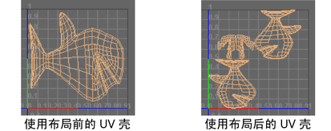

“排布”(Layout)功能可以自动重新定位 UV 壳，使这些壳不在 UV 纹理空间中重叠，并使壳之间的间距和适配达到最大化。这样有助于确保 UV 壳拥有自己单独的 UV 纹理空间。例如，如果将毛发应用到曲面，给定壳上的 UV 纹理坐标不得重叠。
通常，为了便捷和清楚，应保持 UV 壳的彼此分离，但这样做并非绝对必要。例如，您可能希望 UV 壳重叠，以便不同曲面可以使用纹理的同一个区域。

您也可以使用“排布”(Layout)功能执行以下操作：
- 缩放或拉伸 UV 壳，使其可以放入 UV 编辑器(UV Editor)介于 0 和 1 的坐标内。如果您在创建纹理贴图时需要将使用的纹理空间最大化，则此操作非常有用。例如，在使用 3D 绘制时。
- 同时排布多个选定对象的 UV 布局。需要对 UV 编辑器(UV Editor)中的多个对象的 UV 快速排序时，或者多个对象需要共用同一纹理的不同部分时，使用此操作可以提高效率。
通过从“UV 编辑器”(UV Editor)的菜单栏中选择”(Modify > Layout)，或者在“UV 工具包”(UV Toolkit)中选择，可以从“UV 编辑器”(UV Editor)内访问“排布”(Layout)功能。
同时排布多个对象的 UV
- 选择要排布 UV 的对象或面。
- 选择“UV > UV 编辑器”(UV > UV Editor)以显示 UV 编辑器。
- 在“UV 编辑器”(UV Editor)中，选择“修改 > 排布”(Modify > Layout) >
 （如果需要修改选项），或在“UV 工具包”(UV Toolkit)的“排列和排布”(Arrange & Layout)部分中，单击“排布”(Layout)。
（如果需要修改选项），或在“UV 工具包”(UV Toolkit)的“排列和排布”(Arrange & Layout)部分中，单击“排布”(Layout)。
- 在“排布 UV 选项”(Layout UVs Options)窗口中，根据需要的结果设置以下选项：
- 当需要使多个对象的 UV 在 UV 纹理空间中重叠时，将“多个对象”(Multiple Objects)设置为“单独保压(重叠)”(Pack Separately (overlapping))。
- 当需要分隔 UV 时，将“多个对象”(Multiple Objects)设置为“紧缩在一起(不重叠)”(Pack Together (non-overlapping))（默认值）。此选项在需要每个 UV 集彼此分隔且相互区分时非常有用。
- 设置“壳变换设置”(Shell Transform Settings)，以自定义 Maya 如何围绕 UV 空间移动或旋转壳。
- 设置“壳填充”(Shell Padding)和“平铺填充”(Tile Padding)，以分别指定同一对象的壳彼此的间距，以及与 UV 空间边的间距。
- 如果想执行排布操作并关闭“排布 UV 选项”(Layout UVs Options)窗口，请单击“应用”(Apply)执行操作或“排布 UV”(Layout UVs)。